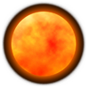
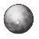
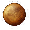
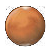
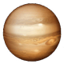
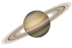
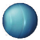
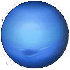

|  |
|  |
|  |
|  |
|  |
|  |
|  |
|  |
火星概括
火星（Mars）是太阳系八大行星之一，天文符号是♂，是太阳系由内往外数的第四颗行星，属于类地行星，我国古书上将火星称为荧惑，西方古代（古罗马）称为战神玛尔斯星。
火星基本上是沙漠行星，地表沙丘、砾石遍布且没有稳定的液态水体（前不久，美国宇航局公布火星上有少量的水）。二氧化碳为主的大气既稀薄又寒冷，沙尘悬浮其中，每年常有尘暴发生。火星两极皆有水冰与干冰组成的极冠会随着季节消长。
与地球相比，火星地质活动较不活跃，地表地貌大部份于远古较活跃的时期形成，有密布的陨石坑、火山与峡谷，包括太阳系最高的山：奥林帕斯山和最大的峡谷：水手号峡谷。另一个独特的地形特征是南北半球的明显差别：南方是古老、充满陨石坑的高地，北方则是较年轻的平原。
火星有两个天然卫星：火卫一和火卫二，形状不规则，可能是捕获的小行星。在地球，火星肉眼可见，最高亮度可达-2.9等，八大行星中比木星、金星暗。2015年9月28日，美国航天局宣布火星存在流动水。
资料卡
位置 第四
平均日距 227940000 km（1.52 AU）
直径 6794 km
质量 6.4219×10²³kg
密度 3.94 gm/cm
重力 0.38 G
公转 686.98 地球日
自转 1.026 地球日
友情链接：天文空间
©laizhiyang